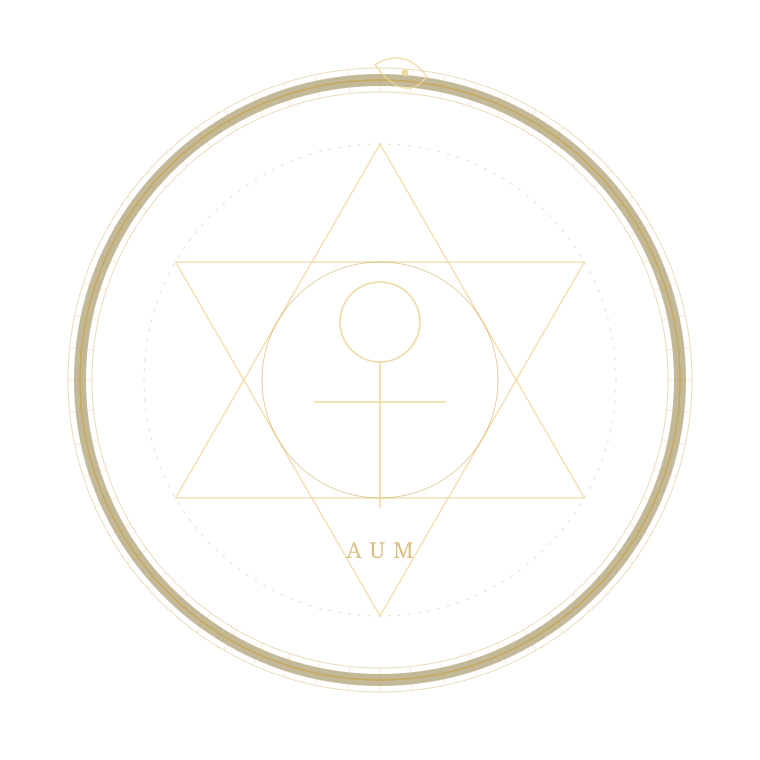

Theosophy
Whatever else she was, Blavatsky is the reason the words karma, astral, root race, adept and akashic entered English drawing rooms. Almost every Western esoteric movement after 1875 is either descended from the Theosophical Society or defined against it.
The Theosophical Society was founded in New York in 1875 by Blavatsky, Henry Steel Olcott and William Quan Judge, and moved its headquarters to Adyar, near Madras, in 1882. Its three declared objects were plain enough to print on a card: to form a nucleus of universal brotherhood without distinction of race, creed, sex, caste or colour; to encourage the comparative study of religion, philosophy and science; and to investigate the unexplained laws of nature and the powers latent in the human being.
The first object was radical for its decade and drew in reformers, suffragists and Indian nationalists. The third produced both the movement's ambition and its scandals.
The seven principles
Blavatsky's anatomy of the human being, as set out in The Key to Theosophy (1889). The lower four are said to disperse after death, the upper three to persist and to reincarnate.
| Sanskrit | Name | What it is said to be | Read psychologically |
|---|---|---|---|
| Sthula sharira | Physical body | The dense vehicle, dissolved at death | The body as the psyche's first and last fact |
| Linga sharira | Etheric double | The vital model of the physical form | Body image and habit, the felt shape of oneself |
| Prana | Vitality | The life force circulating through both | Libido in the broad Jungian sense, undirected energy |
| Kama rupa | Body of desire | Appetite and passion, the seat of what survives briefly as a shell | The complexes and the shadow, autonomous and hungry |
| Manas, lower | Personal mind | Reason bound to desire and to the personality | The ego, useful and partial |
| Manas, higher and Buddhi | Spiritual soul | Intuition, the reincarnating individuality | The Self, in Jung's sense, and the transcendent function |
| Atma | Spirit | Not individual at all: the universal, in which the rest is suspended | The limit of the psychological, where the map stops |
The right hand column is this cabinet's reading, not Blavatsky's. She rejected psychological reductions of the doctrine in advance and in strong language.
Karma, cycles, planes
Karma in Blavatsky's use is not reward and punishment but an impersonal law of balance, closer to conservation than to justice: every act is a cause whose effect returns to its own point of origin, whether or not anyone is watching.
Cycles. The doctrine is emphatically not linear. Manvantara and pralaya, outbreathing and indrawing, apply to a life, a civilisation and a cosmos alike. The appeal of this to a nineteenth century audience exhausted by the idea of progress is easy to understand.
Planes. Physical, astral, mental, buddhic and higher, each with its own matter and its own inhabitants, and the human principles as the points where a person touches each one. Steiner kept this architecture and rebuilt it around Christ; the Golden Dawn mapped it onto the Tree of Life. See the Tree.
The akashic record. A claimed imprint of all events, readable by a trained seer. Steiner made extensive use of it. It is also, in Jung's terms, a serviceable image of the collective unconscious as a memory that does not belong to anyone.
What she actually wrote
Isis Unveiled
Two volumes against both materialism and dogmatic Christianity, arguing for an ancient wisdom tradition older than either. Sprawling, quarrelsome, and full of sources quoted at second hand.
The Secret Doctrine
The central work, presented as a commentary on stanzas from a Book of Dzyan that no one else has seen: cosmogenesis in the first volume, anthropogenesis in the second.
The Key to Theosophy
A catechism in question and answer form, and by far the best entry point: her prose is sharpest when someone is asking her something.
The Voice of the Silence
A short devotional text on the path of renunciation, presented as translated from Tibetan fragments. The Fourteenth Dalai Lama wrote a preface to a centenary edition.
The Mahatma Letters
The correspondence attributed to her teachers, notably Koot Hoomi and Morya, which arrived in circumstances that were investigated at the time and are still argued about.
The successors
Annie Besant and C. W. Leadbeater systematised the doctrine and promoted Jiddu Krishnamurti as the vehicle of the World Teacher. Krishnamurti dissolved the organisation built for him in 1929, in a speech worth reading in full.
Everything downstream
The Golden Dawn, Steiner's anthroposophy, Alice Bailey's writings, the Arcane School, Roerich's circle, much of Western yoga's vocabulary, Mondrian and Kandinsky's theories of form, the New Age in nearly all its branches: the line runs through Adyar. Jung read the theosophists early and kept his distance, while borrowing the useful part of their vocabulary.
If you want to know why a Western occult book of any period uses the words astral, plane, adept and karma in that particular way, the answer is almost always Blavatsky.
The controversies, plainly
The Society for Psychical Research investigated the phenomena at Adyar in 1884 and 1885 and its report accused Blavatsky of fraud. A later SPR paper in 1986 criticised that report's methods without vindicating the phenomena. Substantial unattributed borrowing has been documented in her major works. Passages of The Secret Doctrine set out a scheme of root races which has been used by others for racist purposes, and which this cabinet rejects rather than paraphrases.
Reading her honestly means holding all of this at once: a genuinely original synthesist, a demonstrable embellisher, and the author of material that later hands put to ugly use.